Character & Resource Profile _E / dx[114]
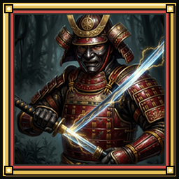
8 Starter Skills & Template WE / hE & FE (100%)
Legacy Template Weights (FE = 100% Sum)
Interactive Tokuno Paperdoll & Armory yE / mx · Hover or Click Gear
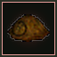
Helm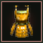
Chest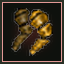
Arms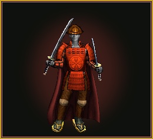
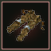
Legs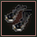
Boots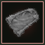
Cloak Primary
Primary
 Fast
Fast
 Heavy
Heavy
 Cyclone
Cyclone
Raw Bundle Starter Layer IDs (kitTokens: ["samuraiSet", "katana", "bandages", "potionsMelee", "robeCloak"])
Unified L1–L60 [Arvore Progression & Ability Cards (12 Milestones) gE.samurai & b Catalog · Click any card or expand ▸ Schema
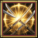
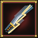
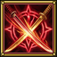
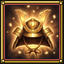
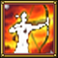
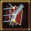
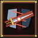
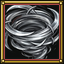
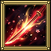
samurai_way
Walk the Bushido code of Tokuno: your weapon and mind become a single shieldless ward. Grants continuous auto-swing mastery and authentic Bushido Weapon Parry (Parry * Bushido / 48,000 1H or 41,140 2H) with Katana, Wakizashi, No-Dachi, and Daisho.
Engine Schema & Raw Spec (samurai_way · innate · gump 21536)
samurai_lightning
Draw your blade at the speed of a thunderbolt, striking before the foe can raise their guard. Delivers a +50 Accuracy precision slash (1.10x-1.20x) with a Bushido^2/72,000 critical IgnoreArmor roll and 3s nerve stagger.
Engine Schema & Raw Spec (samurai_lightning · spellId: 404 · gump 21540)
samurai_perfection
Pledge solemn Bushido Honor to your quarry, turning every unanswered blow into rising martial Perfection. Automatically builds consecutive-hit damage stacks (+10% Mode A window / up to +15% Mode B streak) and restores HP, Mana, and Stamina on kill.
Engine Schema & Raw Spec (samurai_perfection · innate · gump 21536)
samurai_honorable
Deliver the merciful final stroke of the Samurai code when your foe wavers near death. Unleashes a decisive Bushido cut (1.35x-1.45x base, surging to 1.85x execute below 35% HP) and ignites +15% attack speed for 9s with zero failure penalty.
Engine Schema & Raw Spec (samurai_honorable · spellId: 400 · gump 21536)
samurai_confidence
Exhale doubt and center your spirit in unshakable Bushido composure. Restores health on cast (15 + Bushido^2/576) and awakens Inner Calm for 6s: every parried blow restores bonus Stamina and Mana while empowering your next counter-cut.
Engine Schema & Raw Spec (samurai_confidence · spellId: 401 · gump 21537)
samurai_counter
Read the rhythm of the enemy's steel and turn their aggression into their undoing. Strikes for 1.50x-1.60x Bushido damage, grants +18% Counter Stance damage for 7s, and unleashes an instant free retaliation swing whenever you parry.
Engine Schema & Raw Spec (samurai_counter · spellId: 403 · gump 21539)
samurai_double_strike
Flow from an overhead Katana cut directly into a rising reverse slash before the enemy can recover. Signature Katana, Daisho, and Wakizashi technique that lands two rapid consecutive blows at 90% weapon damage each, accelerating Perfection.
Engine Schema & Raw Spec (samurai_double_strike · weaponRef: 7 · gump 20998)
samurai_evasion
Enter a transcendent state of sixth-sense awareness where even arcane bolts part before your blade. Amplifies Weapon Parry (1.16x-1.50x) and intercepts direct-damage spells for 5s; deflecting an attack triggers an instant 0.85x Iaido Flash Riposte.
Engine Schema & Raw Spec (samurai_evasion · spellId: 402 · gump 21538)
samurai_momentum_strike
Channel the full kinetic weight of your blade through the first enemy's ribs directly into a second foe beside them. Cleaves two targets with 115% transferred momentum (150% if the primary target falls) and staggers their footing for 3s.
Engine Schema & Raw Spec (samurai_momentum_strike · spellId: 405 · gump 21541)
samurai_armor_ignore
Slide the razor tip of your Katana through the narrow seams of plate and dragon-scale alike. Bypasses target physical resistance, shreds enemy defense by -18% for 7s, and staggers heavily armored bosses.
Engine Schema & Raw Spec (samurai_armor_ignore · weaponRef: 1 · gump 20992)
samurai_frenzied_whirlwind
Become the eye of a howling Tokuno steel tempest. Signature Wakizashi and Lajatang mastery (ref: 6) that lashes primary and adjacent enemies for 1.15x-1.25x Bushido damage with 50% cyclone cleave, 25% armor bypass, and kinetic stagger.
Engine Schema & Raw Spec (samurai_frenzied_whirlwind · weaponRef: 6 · gump 20997)
samurai_kensei_judgment
The forbidden Grandmaster Iaijutsu stroke of Sword-Saint Amakura. Unsheathes a blinding horizon cut (1.15x-1.25x base, surging to 1.95x execute below 35% HP) and awakens Kensei Stance for 10s (+12% Attack Speed and +8% Damage).
Engine Schema & Raw Spec (samurai_kensei_judgment · spellId: 400 · gump 21536)
Active Ability Deep-Dive Inspector Mode A (100% Existing Engine)
samurai_way
Walk the Bushido code of Tokuno: your weapon and mind become a single shieldless ward. Grants continuous auto-swing mastery and authentic Bushido Weapon Parry (Parry * Bushido / 48,000 1H or 41,140 2H) with Katana, Wakizashi, No-Dachi, and Daisho.
View Live Drop-In JSON Payload (design/drop-in/samurai.json)
{
"id": "samurai_way",
"aliasOf": null,
"name": "Way of the Blade",
"namePtBr": "Caminho da Lâmina",
"category": "samurai",
"kind": "Passive",
"tab": "ability",
"cooldownMs": 0,
"customCooldownMs": 0,
"manaCost": 0,
"staminaCost": 0,
"goldCost": 0,
"reagentsRequired": false,
"effectType": "direct_damage",
"statusEffect": null,
"weaponAbilityRef": null,
"spellId": null,
"itemId": null,
"mapScope": "New",
"gumpIcon": 21536,
"iconKey": "idle_samurai_way",
"scalingFormula": {
"summary": "100% weapon damage auto-attack loop plus shieldless Bushido Weapon Parry (Parry * Bushido / 48000 1H or 41140 2H)",
"stat": "bushido",
"minMultiplier": 1,
"maxMultiplier": 1
},
"unlockLevel": 75,
"progressionTreeLevel": 1,
"inCatalog": true
}
5-Slot Seeded Hotbar Queue mE / gh · ro(e) Priority
Class Mastery & Passive Seals Oil-Painted 64×64 Gump Badges
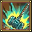
samurai_bushido_initiate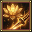
samurai_inner_calm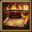
samurai_way_of_the_bladesamurai_bushido_master